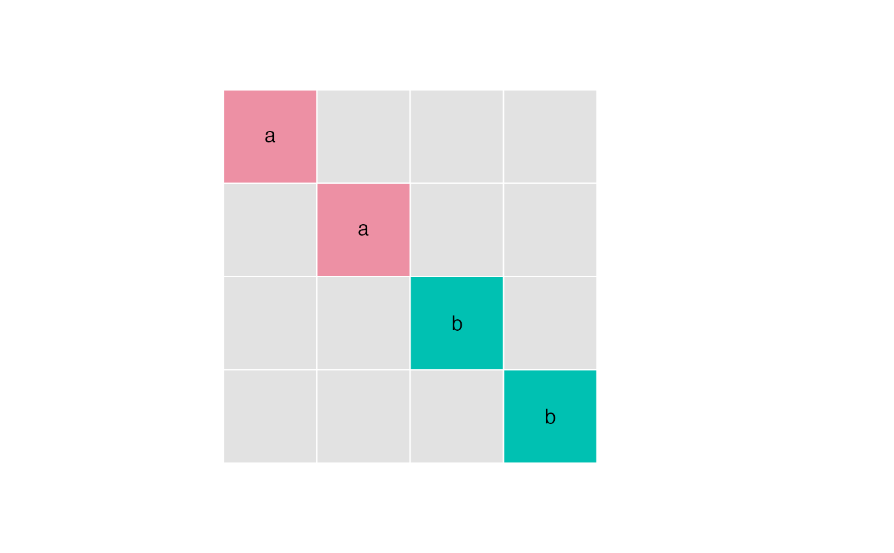

SigmaK_fit.RdEstimate parameters of a structured SigmaK, partly based on Hu (2007).
## read pattern file read_pattern(file, ...) ## estimation SigmaK_fit(object, pattern, twostep=FALSE, check=TRUE, ...) sensitivity(object, ...) ## methods # S3 method for edma_fit_p print(x, truncate=40, ...) SigmaK(object, ...) # S3 method for edma_fit_p SigmaK(object, ...) SigmaKfull(object, ...) # S3 method for edma_fit_p SigmaKfull(object, ...) # S3 method for edma_fit_p sensitivity(object, m=10, scale=10, ...) print_tb(x, ...) plot_tb(x, mar=c(1, 1, 1, 4), ...) make_Sigma(params, pattern)
| object, x | EDMA fit object. For |
|---|---|
| file | the name of the file which the data are to be read from
using |
| truncate | numeric, number of characters to print for the object title. |
| pattern | a pattern matrix, see Details and Examples. |
| twostep | logical, if the optimization is to be constrained by the SigmaK estimate based on Hu (2007) approach, see Details. |
| check | logical, if inputs should trigger errors when we know
the patterns are non identifiable, i.e. number of
non-zero elements > K(K-1)/2, or when the A matrix is non-invertible.
|
| params | a named vector of parameters matching the non- |
| m | positive integer, number of times SigmaK estimation is to be replicated to assess sensitivity. |
| scale | positive numeric, scaling value for random numbers to be used in
sensitivity analysis. The original initial values are
multiplied by random Uniform(0.001, |
| mar | plot margins, see |
| ... | other arguments passed to methods. |
The pattern matrix describes the unknowns in the SigmaK matrix.
Diagonal must be filled. Upper and lower diagonal values must
be symmetric or NA. See Examples.
SigmaKfull calculates the 'full' parametric estimate according to
Hu (2007). SigmaK uses the pattern matrix to
constrain the parametric estimates in an additional optimization step
(thus the name 2-step). This approach minimizes
the loss function sum((SigmaKfull - SigmaK_hat)^2).
This loss function does not allow the comparison of
different parametrizations because the SigmaKfull depends on
the pattern.
The 1-step approach minimizes the loss function
sum((SigmaKstar - (H %*% SigmaK_hat %*% H))^2)
using the SigmaKfull matrix to provide starting values for the optimization.
The 1-step approach (twostep=FALSE) is the default because
the loss function value makes it possible to compare support for
different parametrizations (SigmaKstar does not depend on the pattern).
read_pattern reads in a csv or xls/xlsx file with the
pattern matrix. See Examples.
SigmaK_fit estimates the SigmaK matrix and attaches
that to the EDMA fit object. The estimated SigmaK matrix
can be accessed by the SigmaK method.
Estimation is done by optim.
Hu, L., 2007. Euclidean Distance Matrix Analysis of Landmarks Data: Estimation of Variance. Thesis, Master of Science in Statistics, Department of Mathematical and Statistical Sciences, University of Alberta, Edmonton, Alberta, Canada. Pp. 49.
EDMA data: read_xyz
Nonparametric fit: edma_fit
Form difference: edma_fdm
Growth difference: edma_gdm
Shape difference: edma_sdm
## read pattern matrix in cs or xls/xlsx format read_pattern( system.file("extdata/example.csv", package="EDMAinR"))#> a b c #> a "1" "2" NA #> b "2" "1" NA #> c NA NA "1"#> a b c #> a "1" "2" NA #> b "2" "1" NA #> c NA NA "1"## here is a pattern matrix p <- matrix(c( "a", NA, NA, NA, NA, "a", NA, NA, NA, NA, "b", NA, NA, NA, NA, "b" ), 4, 4, byrow=TRUE) parm <- c(a=0.25, b=0.35) print_tb(p)#> A B C D #> A a . . . #> B . a . . #> C . . b . #> D . . . bplot_tb(p)SigmaK <- make_Sigma(parm, p) dimnames(p) <- dimnames(SigmaK) ## mean form M <- matrix(c(-2.5, 7.5, -2.5, -2.5, -7.5, 2.5, 2.5, 4.5), 4, 2) ## simulate data, so we know what the true values were sim <- edma_simulate_data(n=500, M, SigmaK) ## nonparametric fit fit <- edma_fit(sim) ## parametric fit o <- SigmaK_fit(fit, p) o#> EDMA parametric fit (1-step): Simulated landmark data #> Call: SigmaK_fit(object = fit, pattern = p) #> 4 landmarks, 2 dimensions, 500 specimens, no bootstrap#> true est #> a 0.25 0.2545087 #> b 0.35 0.3269886SigmaK(o) # constrained parametric estimate#> [,1] [,2] [,3] [,4] #> [1,] 0.2545087 0.0000000 0.0000000 0.0000000 #> [2,] 0.0000000 0.2545087 0.0000000 0.0000000 #> [3,] 0.0000000 0.0000000 0.3269886 0.0000000 #> [4,] 0.0000000 0.0000000 0.0000000 0.3269886SigmaKfull(o) # full set of estimates#> L1 L2 L3 L4 #> L1 0.2448985 0.0000000 0.0000000 0.0000000 #> L2 0.0000000 0.2616891 0.0000000 0.0000000 #> L3 0.0000000 0.0000000 0.3110522 0.0000000 #> L4 0.0000000 0.0000000 0.0000000 0.3453506## sensitivity analysis sensitivity(o)#> par_a par_b value #> [1,] 0.2545087 0.3269886 0.0006900395 #> [2,] 0.2545104 0.3270741 0.0006900490 #> [3,] 0.2546629 0.3270748 0.0006900859 #> [4,] 0.2545171 0.3269475 0.0006900414 #> [5,] 0.2549270 0.3273294 0.0006904771 #> [6,] 0.2544405 0.3271203 0.0006900627 #> [7,] 0.2544267 0.3270775 0.0006900541 #> [8,] 0.2545331 0.3268087 0.0006900780 #> [9,] 0.2544849 0.3267305 0.0006901256 #> [10,] 0.2545282 0.3268420 0.0006900650 #> [11,] 0.2544859 0.3269755 0.0006900404